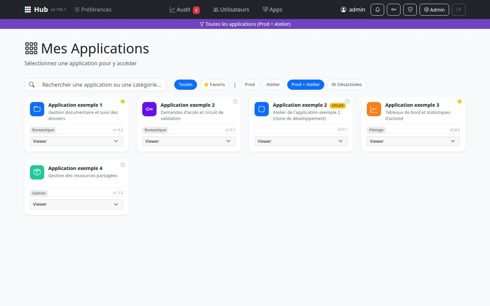
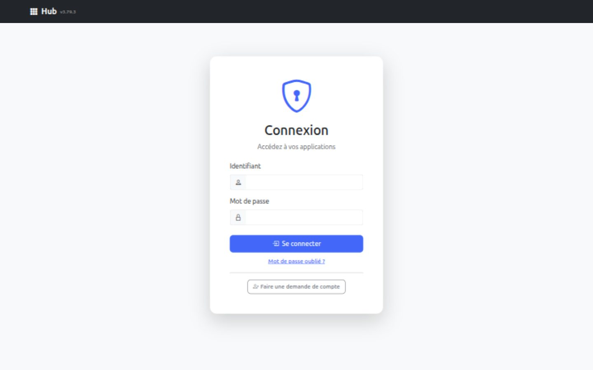
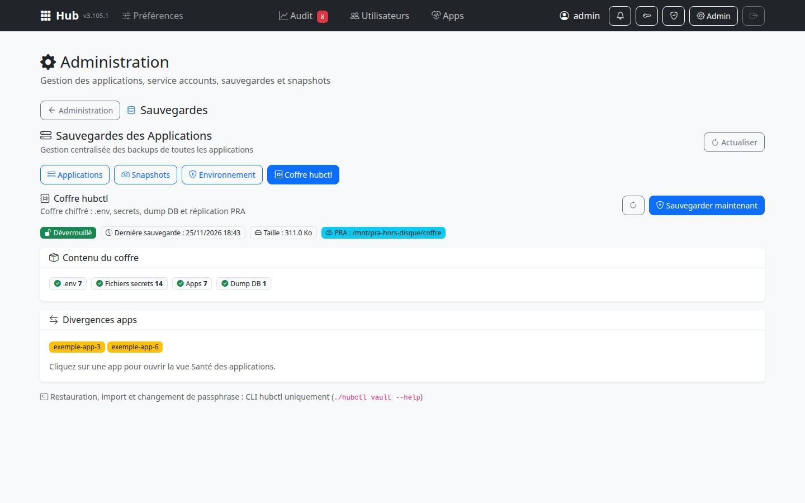
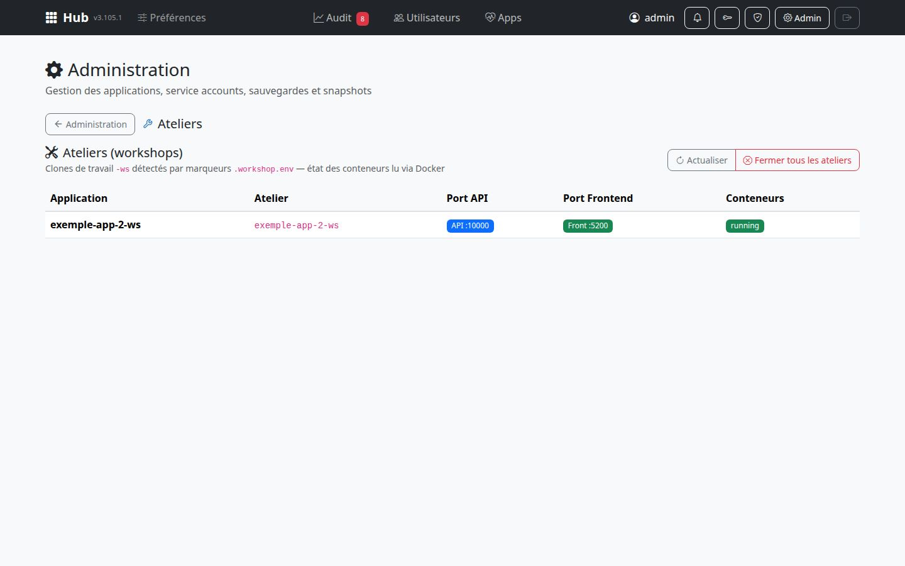
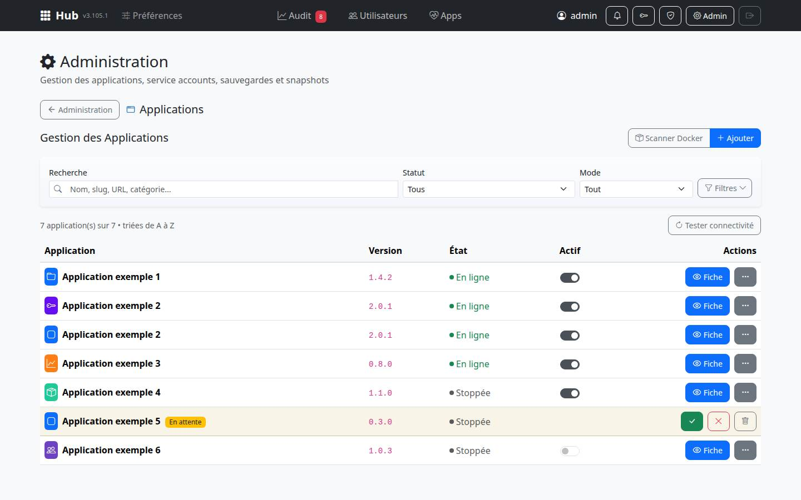
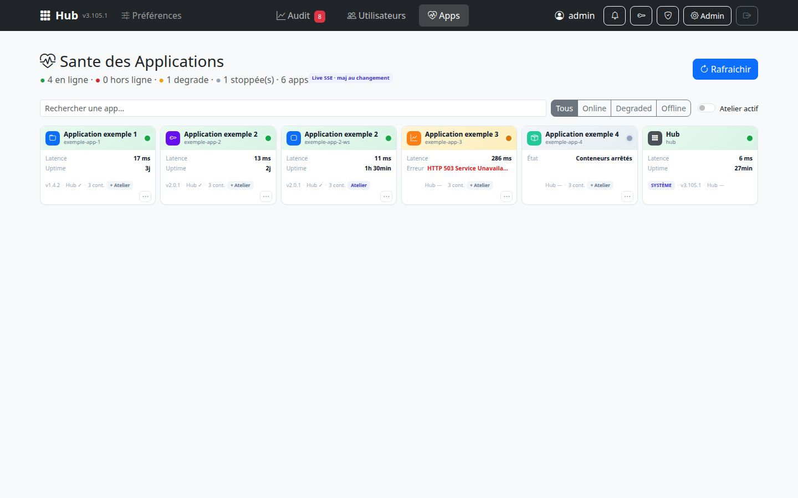
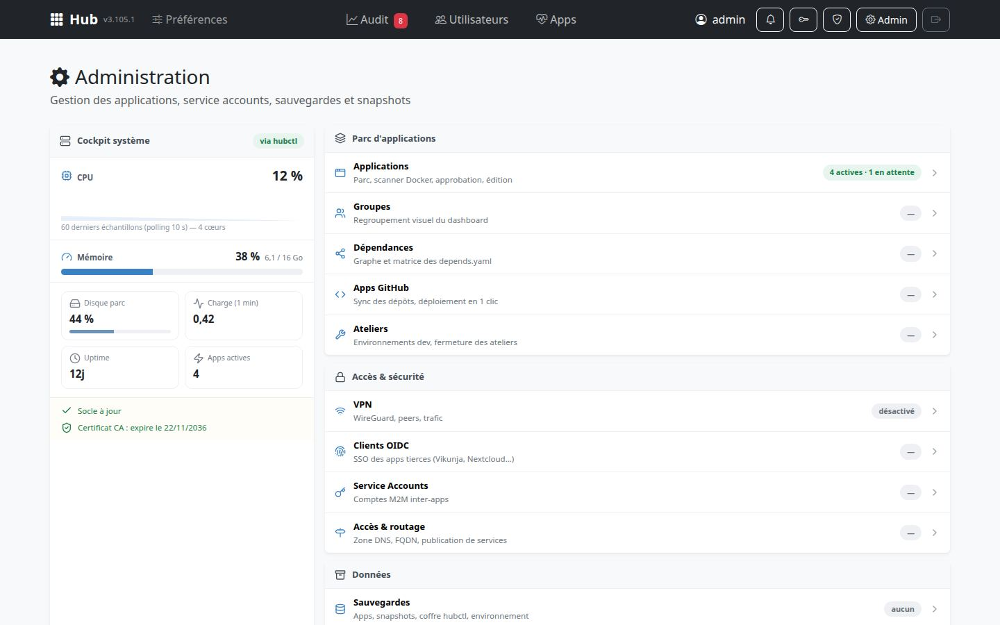
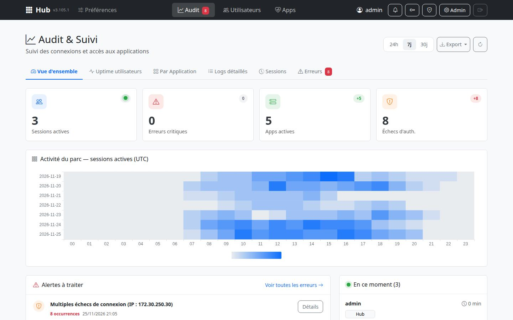

Le HUB POULIDOR en un coup d'œil
POULIDOR est une plateforme d'applications métier : un Hub
central fournit l'authentification, la messagerie, les sauvegardes et
l'administration, et chaque application — générée depuis un template commun —
tourne dans son propre environnement Docker. Tout se pilote depuis
./hubctl ou l'interface web du Hub.
Une stack homogène
FastAPI · React 18 / Vite · PostgreSQL · Docker Compose — identique pour toutes les apps.
Un seul outil de pilotage
hubctl : menu interactif + 14 sous-commandes pour tout administrer.
Un parc vivant
Une douzaine d'applications en production, toutes reliées au même SSO.
Bien démarrer en 5 étapes
| # | Étape | Comment |
|---|---|---|
| 1 | Installer le serveur | sudo ./install.sh (prérequis + Hub), ou ./hubctl init si les prérequis existent — voir Guides d'installation. |
| 2 | Ouvrir le Hub | https://<IP serveur> — connexion admin créée à l'installation. |
| 3 | Lancer hubctl | ./hubctl — tableau de bord, démarrage/arrêt, mise à jour, coffre. |
| 4 | Ajouter une app | Fichier seed YAML, scripts/create_app.sh, ou avec l'assistant IA. |
| 5 | Aller plus loin | Suivre les renvois « voir … » de chaque section ci-dessous. |

Les fonctionnalités du HUB
1. SSO — authentification unique
Une seule connexion ouvre toutes les apps : le Hub émet des jetons
JWTJSON Web Token : jeton signé présenté
par l'utilisateur à chaque app. signés (RSA), vérifiés par les
apps via JWKSClés publiques exposées par
le Hub. — zéro couplage, chaque app reste autonome. Le Hub gère
aussi les utilisateurs, les rôles par app et les demandes de compte.
Voir : HUB_base/docs/GUIDE_ADMIN.md,
HUB_base/docs/ARCHITECTURE.md.

2. Bridge OIDC pour apps externes
Le Hub fait office de fournisseur d'identité (OpenID
Connect) pour des outils tiers : discovery, clients OIDC auto-enregistrables,
id_token, déconnexion back-channel, échange de tokens protégé
contre l'abus (throttle des échecs par client). Le sub OIDC est
immuable : renommer un login n'entraine aucune
réassociation manuelle côté Vikunja, Nextcloud ou Grafana.
Voir : HUB_base/docs/ (intégration OIDC).
3. Registre des applications & M2M
Chaque app s'enregistre au démarrage auprès du Hub (annuaire). Les apps
communiquent entre elles via des identifiants
M2MMachine-to-Machine : credentials
client_credentials pour les appels de service à service. et un
catalogue de services partagés découvrable.
Voir : HUBapp_TEMPLATE_base/docs/API.md.
4. Messagerie & notifications temps réel
Messagerie inter-applications et vers les utilisateurs, notifications
SSEServer-Sent Events : flux poussé du
serveur vers le navigateur., badges de messages non lus : le
socle commun d'alerting du parc.
Voir : HUB_base/docs/ARCHITECTURE.md.
5. Sauvegardes des apps
Backups automatiques planifiés et manuels par app (ZIP téléchargeable),
restauration guidée, suivi des orphelins. Config par app depuis l'UI admin.
Voir : HUBapp_TEMPLATE_base/docs/BACKUP_RESTORE.md,
HUB_base/docs/BACKUP.md.
6. Coffre chiffré & kit PRA
Tous les secrets (.env, clés) dans un coffre chiffré
(Fernet + scrypt), passphrase auto-gérée, réplication automatique vers un
emplacement de secours hors disque (Emplacement PRA).
Voir : page Coffre.

./hubctl vault).7. Export / restore & disaster recovery
Archive chiffrée du parc complet (./hubctl export), restauration
sur serveur neuf (restore) et assistant PRA
(pra-restore : coffre + dernier snapshot + réinjection des apps).
Voir : page export / restore.
8. Ateliers de développement
Bac à sable par app : copie de la DB, ports et réseau dédiés,
prod qui continue de tourner. Cycle complet pilotable depuis
l'UI HUB (vue Santé) ou le CLI (./hubctl atelier) : créer,
tester une montée de version, déployer en prod (DB préservée), supprimer.
Voir : page Atelier,
skill app-workshop-mover.

-ws (marqueur .workshop.env), état des conteneurs lu via Docker, fermeture groupée.9. Déploiement & cycle de vie des apps
Création depuis le template, configuration du dépôt git depuis l'UI
(PAT GitHub incluse, repos privés OK), mise à jour ciblée ou du parc entier
(./hubctl update hub|<slug>|"*"), recréation d'une app, gestion des ports alloués
par le Hub, HTTPS/PKI avec re-sync automatique des certificats.
Voir : guide make,
docs/guide-developpement-template.md.

10. VPN WireGuard
Accès distant sécurisé au parc intégré au Hub : génération de config
clients, activation/désactivation, synchronisation —
./hubctl vpn sync|status|on|off.
Voir : ./hubctl vpn --help.
11. Administration & observabilité
Dashboard santé des apps refondu (cartes « ops console », filtres
instantanés, panneau branches 🌿 pour envoyer une branche
GitHub en atelier), page Audit (sessions live, heatmap
d'activité, alertes), administration réorganisée en onglets à 2
niveaux (Applications, Sauvegardes, VPN, Configuration + sous-onglets
Groupes, Service Accounts, Clients OIDC, Apps GitHub, Réseau), gestion des
utilisateurs (identité : UUID stable, prénom/nom, renommage du login),
déploiement par fichier seed.
Voir : HUB_base/docs/GUIDE_ADMIN.md.



12. Debug assisté par IA
Un agent IA local (Ollama) diagnostique une app en panne :
logs, DB (lecture seule par défaut), conteneurs — avec garde-fous et
confirmations pour toute action. Modèle en cours de déploiement.
Voir : docs/debug-agent.md.
13. Socle applicatif versionné (HUBsocle)
Le code de base des apps est mutualisé et versionné
(sous-module HUBsocle/) : factory create_app(),
paquets hub-socle (Python) et @poulidor/hub-socle
(npm), images de base poulidor/socle-api / socle-web
construites en local sans registre (offline-first). Chaque
app déclare sa version via APP_SOCLE_VERSION ;
./hubctl socle build construit les images,
./hubctl socle status surveille le drift de la flotte.
Voir : HUBsocle/README.md.
14. Écosystème développeur
Template canonique (backend async, frontend React, tests, conventions UTC
strictes), design system HUBCSS partagé, serveur MCP pour
piloter le Hub depuis un assistant IA, et skills opencode embarqués
(release-on-main, create-hub-app,
vault-manager…).
Voir : docs/guide-developpement-template.md,
HUBapp_TEMPLATE_base/docs/HUB_MCP.md.
Guides d'installation
Nouvelle installation
| Voie | Quand | Comment |
|---|---|---|
Tout-en-un sudo ./install.sh | Serveur Debian / Ubuntu / Linux Mint vierge | Installe les prérequis (Docker, Python, git…), puis initialise et démarre le Hub. Les credentials admin s'affichent dans le récapitulatif final ; le Hub est ensuite sur https://<IP serveur>. |
Prérequis présents ./hubctl init | Docker, Python et git déjà installés, ou déploiement ciblé du Hub | Initialisation directe du Hub (wizard, PKI, registre). Détail pas à pas : HUB_base/docs/GUIDE_INSTALLATION.md. |
| Manuelle | Contrôle fin de chaque étape (reverse proxy existant, contraintes réseau…) | Suivre HUB_base/docs/GUIDE_INSTALLATION.md, puis enregistrer les apps. |
Ajouter une application
Trois voies équivalentes : fichier seed YAML
(./hubctl seed apps.yaml), script scripts/create_app.sh,
ou assistant IA (« Crée une app mon-outil dans POULIDOR » —
skill create-hub-app). L'app naît du template canonique, s'enregistre
au Hub et rejoint le portail. Points de vigilance par opération :
pages ajouter une app,
atelier,
bascule dev → prod.
Mettre à jour une installation existante
La manip dépend de l'ancienneté de l'installation — les outils de mise à jour ont été mis en place progressivement :
| Installation | La manip |
|---|---|
| ≥ 0.74.10 (unification des updates, oct. 2026) | Routine officielle : ./hubctl doctor → ./hubctl --prod update hub (bloquant) → ./hubctl --prod update all → ./hub.sh status. |
| hubctl présent, < 0.74.10 | Pull du méta + submodules pour récupérer le hubctl récent, puis routine officielle. |
| Pré-hubctl (< 0.10.0, avant juil. 2026) | sudo ./install.sh : resynchronise les submodules et reconverge le Hub, et met en place hubctl — puis bascule sur la routine officielle. |
| Erreur « historique divergent » (purge du 26/10/2026) | Réaligner le clone (git fetch origin --prune + git reset --hard origin/main) — procédure dans docs/ops/mise-a-jour.md. |
Rappel : update-hub.sh est déprécié, ./hub.sh update
délègue à hubctl update hub. Le méta-repo est la source de vérité ;
jamais de git pull manuel dans un sous-module. Référence complète :
docs/ops/mise-a-jour.md.
Où trouver la doc détaillée
| Document | Contenu |
|---|---|
| guide hubctl (ce dossier) | Menu TUI + 14 sous-commandes CLI, garde-fous. |
| guide make (ce dossier) | Cibles Makefile du Hub et des apps. |
| architecture (ce dossier) | Composants du parc, prod vs atelier, coffre. |
docs/guide-parc-poulidor.md | Référence complète du parc (instantané daté). |
docs/ops/mise-a-jour.md | La routine de mise à jour officielle (doctor → update hub → update all, interdits, cas « historique réécrit »). |
docs/guide-developpement-template.md | Guide de développement d'une app (conventions, tests, release). |
HUB_base/docs/GUIDE_ADMIN.md | Administration du Hub au quotidien. |
HUB_base/docs/GUIDE_INSTALLATION.md | Installation détaillée / manuelle. |
HUBapp_TEMPLATE_base/README.md + docs/ | Template : API, HTTPS, backups, M2M, MCP. |
docs/debug-agent.md | Agent de debug IA. |
docs/canvas-poulidor.html | Présentation visuelle (canvas client). |
AGENTS.md encadrent ces opérations.